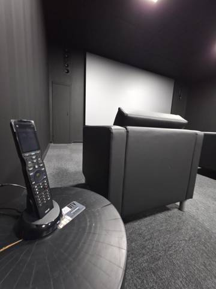

Every image is resized to 2048px max, metadata and GPS stripped, and named for SEO. Use the .webp on the site; the .jpg is the fallback. Alt text is in photo-manifest.csv.
Rules: publish only what's in the page folders. Nothing from _hold-needs-fix goes live until the listed fix is done. No manufacturer, stock or AI images get presented as completed work.
Home Theater → /home-theater-installation · 9 photos
Hero: dtv-installations-paneled-theater-coffered-ceiling-recliners (after tag fix) or dtv-installations-purple-led-theater-waterfall-demo

dtv-installations-commercial-theater-remote-foreground.webp Black commercial theater with control remote in the foregrounddtv-installations-purple-led-theater-waterfall-demo.webp Home theater with LED-lit screen wall, tower speakers and subwoofersdtv-installations-theater-loveseat-detail.webp Leather theater loveseat with swivel tray and cupholdersdtv-installations-theater-recliners-wall-sconces.webp Theater with tiered leather recliners and wall sconcesdtv-installations-two-row-theater-recliners.webp Two rows of theater recliners on a riser facing the screen walldtv-installations-basement-theater-screen-frame-assembly.webp Installer assembling a projection screen frame in a basement theaterdtv-installations-gallery-room-projector-commissioning.webp Projector commissioning in a gallery room with drop-down screendtv-installations-projection-screen-brick-installer-ladder.webp Installer on a ladder fitting a projection screen on exposed brick Crop boxes and foam.dtv-installations-theater-build-riser-framing.webp Theater room painted black with riser framing under construction
Motorized Shades → /motorized-shades · 17 photos
Hero: dtv-installations-two-story-great-room-shade-install-scaffolding great room on scaffolding, or loft wide dtv-installations-loft-shades-wide-floor
dtv-installations-loft-motorized-roller-shades-lowered.webp Three motorized roller shades lowered to matched height in a modern loft Remove folding chair if reshot.dtv-installations-loft-shades-built-ins.webp Motorized shades over a platform window seat beside oak built-insdtv-installations-loft-shades-portrait.webp Loft with three motorized shades lowered, portrait viewdtv-installations-loft-shades-wide-floor.webp Loft with motorized shades lowered over a platform window seatdtv-installations-narrow-shade-pocket-sash-window.webp Concealed shade pocket above a double-hung windowdtv-installations-recessed-shade-pocket-terrace-slider.webp Recessed shade pocket above a floor-to-ceiling terrace sliderdtv-installations-roller-shade-half-lowered-loft.webp Roller shade lowered halfway over a tall loft windowdtv-installations-shade-fabric-swatch-openness.webp Shade fabric swatches comparing openness factors and blackoutdtv-installations-shade-pocket-arched-window.webp Recessed shade pocket above an arched windowdtv-installations-shade-side-channel-detail.webp Close-up of a shade fabric edge and side channel at the silldtv-installations-shade-sill-light-line-detail.webp Shade hem resting at the sill with a fine light linedtv-installations-waterfront-bedroom-before-shades.webp Waterfront bedroom with shades raised to the view Before frame of waterfront sequence.dtv-installations-waterfront-bedroom-shades-mid.webp Waterfront bedroom with shades partly lowereddtv-installations-loft-shade-pockets-framing-windows.webp Shade pockets framed above tall loft windowsdtv-installations-scaffold-crew-setting-shade-fascia.webp Two installers on scaffolding setting shade fascia under a vaulted ceilingdtv-installations-shade-pocket-framing-loft.webp Shade pocket framed into a loft soffit before drywalldtv-installations-two-story-great-room-shade-install-scaffolding.webp Installers on scaffolding fitting motorized shades across a two-story wall of glass Homepage/shades hero candidate. Shows scale.
TV & Millwork Integration → /tv-installation · 8 photos
Hero: dtv-installations-flush-recessed-tv-side-profile flush profile + dtv-installations-frame-tv-carved-mantel Frame TV
dtv-installations-bedroom-tv-lift-roman-shades-wide.webp Bedroom with TV lift cabinet and roman shades, wide viewdtv-installations-flush-recessed-tv-side-profile.webp Side profile of a TV recessed flush with the wall plane Key proof shot for the flush-niche story.dtv-installations-flush-tv-shallow-focus-alt.webp Flush-mounted TV with white soundbar, alternate angledtv-installations-flush-tv-white-soundbar-shallow-focus.webp Flush-mounted TV with white soundbar seen past a bedroom lampdtv-installations-frame-tv-carved-mantel.webp Frame TV displaying art above a carved stone mantel with soundbardtv-installations-living-room-large-tv-soundbar.webp Living room with large wall-mounted TV and soundbar over a low consoledtv-installations-living-room-tv-console-styled.webp Styled living room with wall-mounted TV over a sculpted consoledtv-installations-stone-fireplace-articulating-mount-before.webp Articulating TV mount in a stone fireplace recess before install Before half of stone fireplace pair (pairs with dtv-installations-stone-fireplace-tv-finished).
Commercial AV → /commercial-av · 11 photos
Hero: dtv-installations-frame-tv-white-brick-conference Frame TV conference room
dtv-installations-boardroom-after-displays-projector.webp Furnished boardroom with three displays and projection screen running After half of boardroom pair (pairs with dtv-installations-boardroom-before-displays-projector).dtv-installations-boardroom-before-displays-projector.webp Boardroom with three displays and projection screen before furnishing Before half of boardroom pair (pairs with dtv-installations-boardroom-after-displays-projector).dtv-installations-boardroom-displays-projection-angle.webp Boardroom with display wall and projection screen, side angledtv-installations-dispensary-portrait-display-wall.webp Three portrait digital displays beneath a dispensary's gold logo Confirm client OK to show their name.dtv-installations-frame-tv-white-brick-conference.webp Frame TV showing art on white brick, reflected in a glossy conference table Best commercial shot.dtv-installations-pilates-studio-displays-backlit-mirrors.webp Pilates studio with monitors on arms beneath backlit arched mirrorsdtv-installations-conference-room-commissioning.webp Conference room display during system programming Move boxes.dtv-installations-office-ceiling-cabling-crew.webp Crew running ceiling cabling in an office conference roomdtv-installations-pilates-studio-av-build.webp Pilates studio during AV installationdtv-installations-pilates-studio-display-install.webp Pilates studio displays installed between arched mirrors during builddtv-installations-scrap-yard-signage-install.webp Technician installing displays and controls at a commercial yard
dtv-installations-homeworks-dimming-modules-closeup.webp Close-up of HomeWorks dimming and DALI modulesdtv-installations-led-strip-millwork-install.webp LED tape lighting being installed in oak millwork
Networking & Racks → /networking · 3 photos
Hero: dtv-installations-structured-media-can-dressed-patch-cords dressed structured media
dtv-installations-structured-media-can-dressed-patch-cords.webp Structured media enclosure with dressed patch cords and coaxdtv-installations-equipment-rack-glass-door.webp Equipment rack with glass door installed in a framed closetdtv-installations-structured-media-enclosure-rough.webp Structured media enclosure with network and coax terminations
Security Cameras → /security-cameras · 3 photos
Hero: dtv-installations-bullet-camera-emt-conduit-brick bullet camera on EMT
dtv-installations-bullet-camera-emt-conduit-brick.webp Bullet security camera fed by EMT conduit on brickdtv-installations-dome-bullet-cameras-conduit-corner.webp Dome and bullet cameras with weatherproof junction boxes on a brick cornerdtv-installations-dome-camera-brick-facade.webp Dome security camera on a brick facade
Smart Home Control → /smart-home-automation · 3 photos
dtv-installations-savant-remote-charging-dock.webp Savant handheld remote on its charging base below a wall-mounted soundbardtv-installations-urc-remote-dock-delivery.webp URC handheld remote on its dock with screen film still on Caption as delivery day.dtv-installations-video-intercom-entry-panel.webp Wall-mounted video intercom showing door unlock controls
dtv-installations-in-wall-lcr-cutouts-before.webp Wall opened for in-wall speakers and TV mount before finishing Before half of Marantz pair (pairs with dtv-installations-marantz-room-in-wall-lcr-finished).dtv-installations-marantz-room-in-wall-lcr-finished.webp Living room with TV, in-wall left-center-right speakers and Marantz system After half of Marantz pair (pairs with dtv-installations-in-wall-lcr-cutouts-before).
Outdoor Living → /outdoor-av · 4 photos
Hero: Process only — needs a dusk hero reshoot
dtv-installations-outdoor-pavilion-crew-ladders.webp Installers on ladders mounting motorized exterior screens in a paviliondtv-installations-outdoor-pavilion-crew-tv-stone-wall.webp Crew installing a TV on a stone wall inside an outdoor paviliondtv-installations-outdoor-pavilion-stone-fireplace-tv-install.webp Outdoor pavilion with TV on a stone fireplace during installationdtv-installations-outdoor-pavilion-wide-install.webp Wide view of an outdoor pavilion during AV and screen installation
About / Our Process → /about · 13 photos
Hero: dtv-installations-installer-drilling-protected-room installer in protected room
dtv-installations-installer-drilling-protected-room.webp Installer drilling in a bedroom fully protected with plastic Homepage hero for care/protection.dtv-installations-pre-wire-measure-framing.webp Installer measuring between studs during pre-wiredtv-installations-blue-built-in-tv-protected.webp Navy built-in cabinetry with TV protected during finishingdtv-installations-flush-tv-niche-framing-cutout.webp Wall cut and framed for a flush TV nichedtv-installations-gallery-room-av-install.webp Gallery room during projector and screen installationdtv-installations-high-rise-install-room-protection.webp High-rise living room protected in plastic during installdtv-installations-high-rise-screen-housing-install.webp Ceiling screen housing installed in a high-rise corner apartmentdtv-installations-installer-mounting-projector-ladder.webp Installer on a ladder mounting a ceiling projectordtv-installations-legacy-crestron-rack-boiler-flue.webp Legacy Crestron rack installed beside a boiler flue Blog use: inherited-system upgrade story.dtv-installations-room-protected-before-install.webp Living room fully wrapped in protective plastic before installdtv-installations-tv-mount-cement-board-rough.webp TV mount set on framing during basement rough-indtv-installations-tv-wall-cutout-soundbar-bracket.webp Wall cutout and soundbar bracket prepared for a concealed-wire TV installdtv-installations-wall-mounted-network-enclosure-soffit.webp Wall-mounted network enclosure installed behind soffit framing